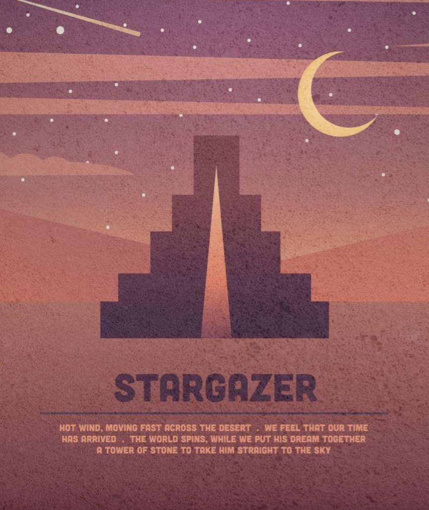
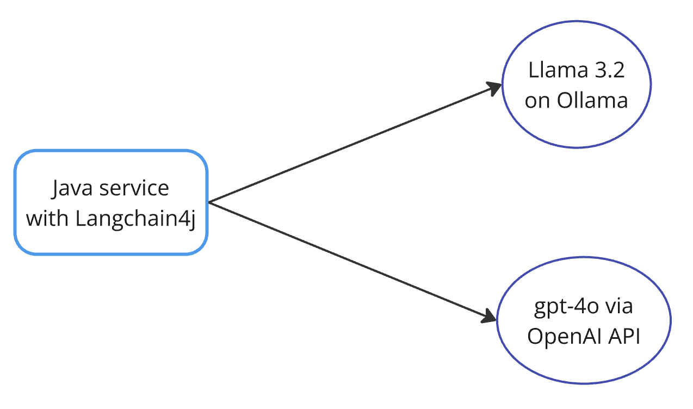

GenAI with Langchain4j and Ollama
Helsinki Java meetup
19 Feb 2025
Nikolay Kuznetsov
About me
Senior software engineer
Pre-owned project at Zalando Helsinki
C → Java → Kotlin → Go
Author of pgx-outbox library
Previous experience with AI
ChatGPT, GitHub Copilot, Claude
Pet project with OpenAI API calls
Ollama
Like Docker but for LLMs
Local inference, minimal setup
Written in Go, uses llama.cpp
126K stars at GitHub
Stargazers
OpenJDK 20K
Kotlin 50K
Spring 57K
Kubernetes 113K
Golang 125.7K
Ollama demo
> ollama pull llama3.2
> ollama run llama3.2
> ollama ps
>>> Please, briefly compare Java and Go
>>> /bye
Supported models
Llama by Meta
Phi by Microsoft
Mistral
Gemma by Google
Qwen by Alibaba
DeepSeek
Ollama APIs
Ollama-style: /api/generate
curl -X POST http://localhost:11434/api/generate \
-H "Content-Type: application/json" \
-d '{
"model": "llama3.2",
"prompt": "Please, briefly compare Java and Go",
"stream": false
}'
OpenAI-compatible: /v1/chat/completions
Talking to LLMs
Langchain4j
Spring AI
Official SDKs: OpenAI, AWS, etc
Langchain4j + Ollama
import dev.langchain4j.model.chat.ChatLanguageModel;
import dev.langchain4j.model.ollama.OllamaChatModel;
ChatLanguageModel model = OllamaChatModel.builder()
.baseUrl("http://localhost:11434")
.modelName("llama3.2:1b")
.build();
var answer = model.chat("Why Java is still awesome in 2025?");
log.info("Response from LLM -> {}", answer);
Chat Language Model
package dev.langchain4j.model.chat;
public interface ChatLanguageModel {
// main API to interact with a chat model
default ChatResponse chat(ChatRequest chatRequest)
default String chat(String userMessage)
Langchain4j + OpenAI
import dev.langchain4j.model.openai.OpenAiChatModel;
var model = OpenAiChatModel.builder()
.apiKey(System.getenv("OPENAI_API_KEY"))
.modelName("gpt-4o")
.build();
var answer = model.chat("Why Java is still awesome in 2025?");
Langchain4j demo
Streaming model
var model = OllamaStreamingChatModel.builder().baseUrl("http://localhost:11434").modelName("llama3.2").build();
model.chat("Provide a long explanation why Java is awesome",
new StreamingChatResponseHandler() {
public void onPartialResponse(String token) {
out.print(token);
}
public void onError(Throwable error) {
// handle error
}
public void onCompleteResponse(ChatResponse response) {
out.println();
}
});
Streaming pitfalls
Langchain4j is still 1.0.0-beta1
model.chat() blocks for OpenAI
model.chat() is async call for Ollama
Streaming demo
Using CompletableFuture
and Thread.startVirtualThread
Server-Sent Events (SSE)
Chat
var scanner = new Scanner(System.in);
var conversation = synchronizedList(new ArrayList<ChatMessage>());
while (true) {
var userInput = scanner.nextLine();
conversation.add(UserMessage.from(userInput));
model.generate(conversation,
new StreamingResponseHandler<>() {
public void onComplete(Response<AiMessage> response) {
conversation.add(response.content());
out.println("You: ");
}
});
}
Chat demo
Conversation history in each request
Watch out for context length / window
(128K tokens for Llama 3.2)
Image recognition
import dev.langchain4j.data.message.*;
var userMessage = UserMessage.from(
TextContent.from("What do you see?"),
ImageContent.from(
readImageInBase64("/computer.jpeg"),
"image/jpeg"
)
);
var response = model.chat(userMessage);
moondream is the tiniest model
Image recognition demo

The image features a desktop computer setup with a monitor,
keyboard, and mouse. The monitor is placed on the right side
of the desk, while the keyboard is situated in front of it.
Augmented Generation (AG)
"prompt engineering" at server side
Embeddings
numerical vectors that represent
the semantic meaning of data
in a high-dimensional space
Embeddings
import dev.langchain4j.data.embedding.Embedding;
import dev.langchain4j.store.embedding.CosineSimilarity;
// model is nomic-embed-text
Embedding cat = model.embed("Cat is domesticated animal").content();
Embedding ollama = model.embed("Ollama runs LLMs locally").content();
// float[768] vector; normalized hence: [-1, 1]
double similarity = CosineSimilarity.between(cat, ollama);
log.info("Cosine similarity between embeddings is: {}", similarity);
Retrieval Augmented Generation (RAG)
"prompt engineering" at server side
using data retrieved from a (vector) database
Vector database
specialized storage for embeddings
and efficient similarity-searching
Vector databases
prototyping: FAISS and ChromaDB
managed: Pinecone and Weaviate
large-scale: Milvus and Qdrant
Credits
Ignacio López Luna:
ilopezluna/generative-ai-with-testcontainers
Manuel de la Peña:
Testcontainers
Favorite: Postgres, Localstack
Used: ToxiProxy, Redis, Elasticsearch
Ollama can be run in Testcontainers!